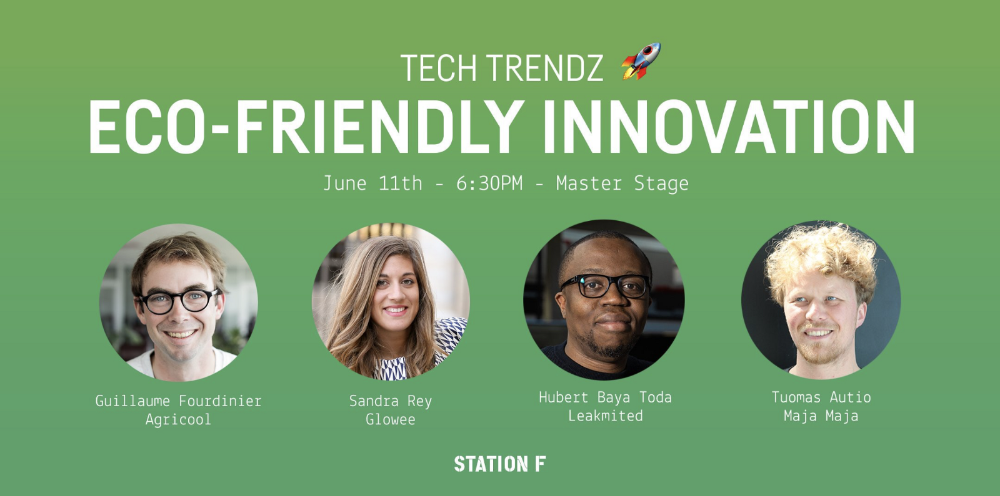

Mes journées se ressemblaient un peu toutes, alors je vais les présenter toutes dans le même paragraphe.
Au début, j’étais très excité à l’idée de faire mon stage à Station F. En prenant le train le matin, je me posais beaucoup de questions sur ce que j’allais faire, sur l’organisation des journées...Arrivé, j’ai eu un speech sur l’organisation de Station F puis mon patron m’a accompagné à son bureau avec ses associés (qui sont également à la base ses amis). J’ai enregistré mes données sur des applications de Sation F « Hal » et « Slack », qui vous permettent de savoir ce qu’il se passe dans la vie de Station F et de communiquer avec les autres startups. J’ai commencé à apprendre à coder des sites internet en HTML5 et CSS3 (2 langages de code).
Mes journées se ressemblaient un peu toutes, alors je vais les présenter toutes dans le même paragraphe.
Au début, j’étais très excité à l’idée de faire mon stage à Station F. En prenant le train le matin, je me posais beaucoup de questions sur ce que j’allais faire, sur l’organisation des journées...Arrivé, j’ai eu un speech sur l’organisation de Station F puis mon patron m’a accompagné à son bureau avec ses associés (qui sont également à la base ses amis). J’ai enregistré mes données sur des applications de Sation F « Hal » et « Slack », qui vous permettent de savoir ce qu’il se passe dans la vie de Station F et de communiquer avec les autres startups. J’ai commencé à apprendre à coder des sites internet en HTML5 et CSS3 (2 langages de code).
Le jeudi après-midi de la première semaine j’avais une conférence à laquelle je m’étais inscrit quelques jours plus tôt. Son nom était « How to reinforce your advocacy and influence strategy ? », elle était présentée par un dirigeant de la marque de cosmétique L’Oréal, avec pour but d’expliquer aux startups comment dans une ère de confiance, peut-on renforcer notre stratégie d’influence et de revendication. Il parlait des influenceurs, des pubs et des stratégies de faire connaître le produit. La conférence était en anglais car toutes les conférences à Station F se déroulent en anglais, et puis il y avait des personnes de toutes nationalités. J’ai trouvé cela très intéressant et instructif.
 Et le mercredi de la deuxième semaine en fin d’après-midi, j’en ai eu une autre mais celle-ci était complétement différente de la dernière. Elle s’appelait "Eco-Friendly Innovation" présentée par Guillaume Fourdinier (CEO de Agricool: ferme urbaine dans des conteneurs qui font pousser des fraises toute l'année lors de leur déplacement vers un autre pays afin d'être vendues), Sandra Rey (CEO de Glowee: entreprise qui travaille sur la bioluminescence à partir de l'émission de la lumière par certains organismes), Hubert BayanToda (CEO de Leakmited: entreprise cherchant à manager l'eau sur terre grâce à leur infrastructures et des images satellites) et enfin Cindy Yang (Commercialisation Officer de Sation F). La conférence était à propos de mettre les fermes plus efficaces grâce à des bactéries qui polluent moins faisant pousser les légumes et les fruits plus rapidement; le tout financé soit par de l'argent privé ou par des levées de fonds.